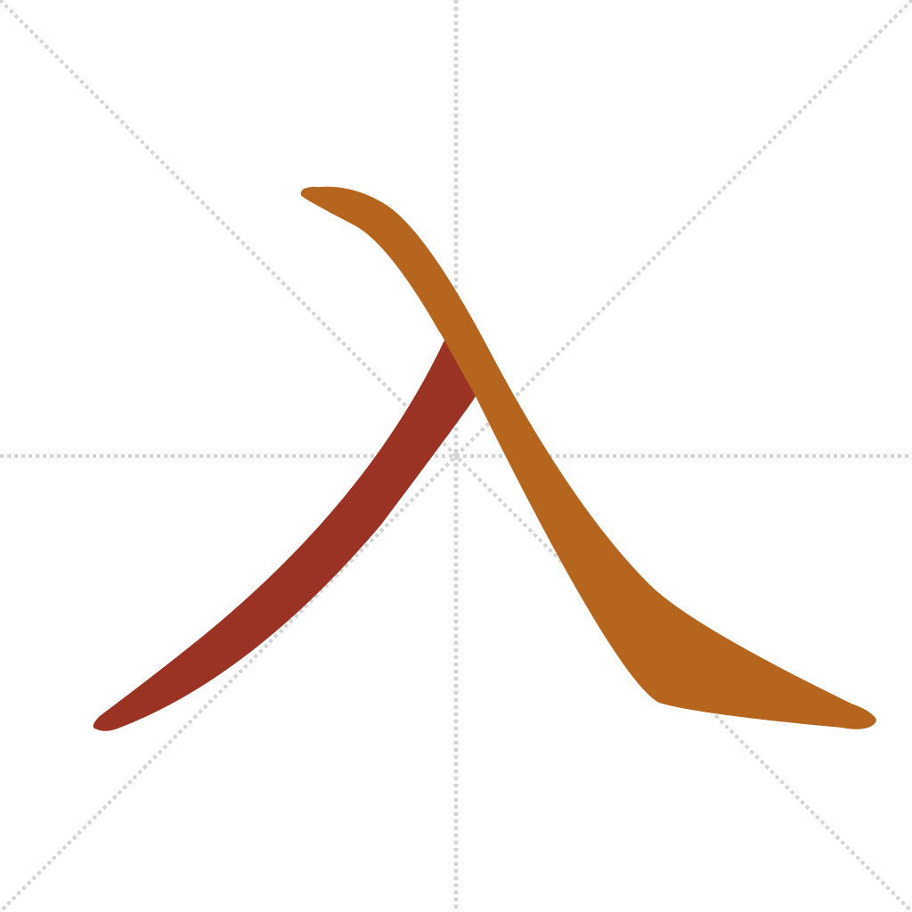
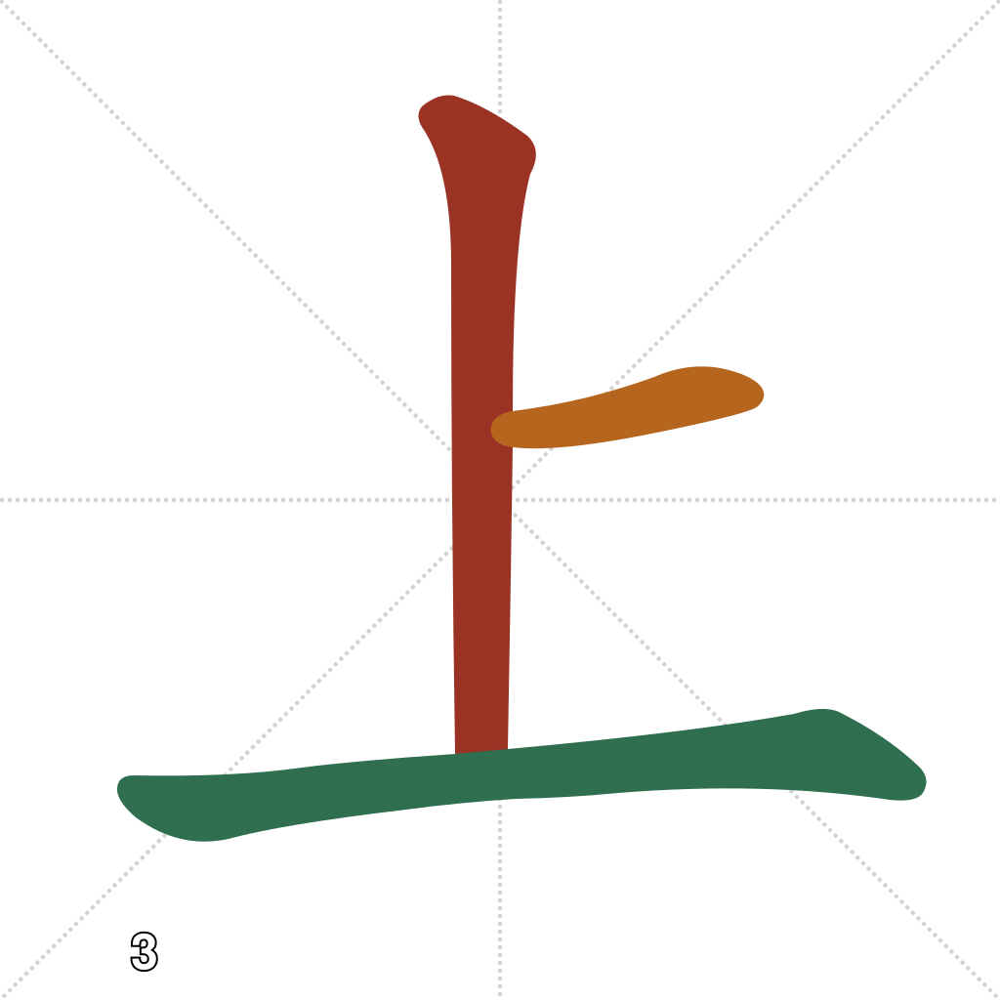
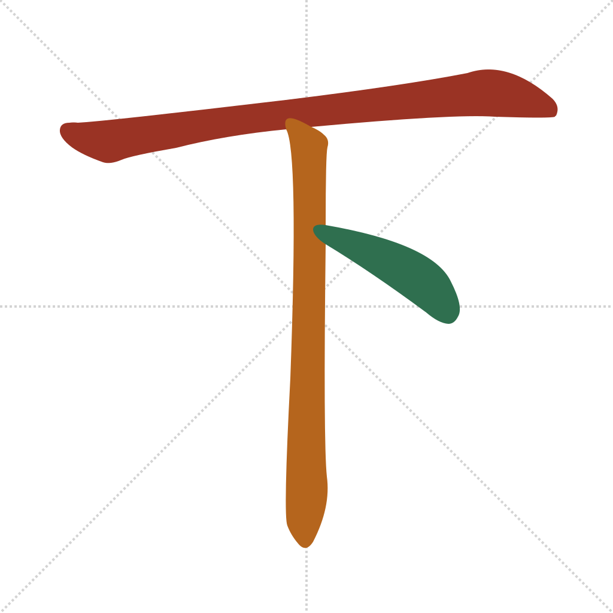
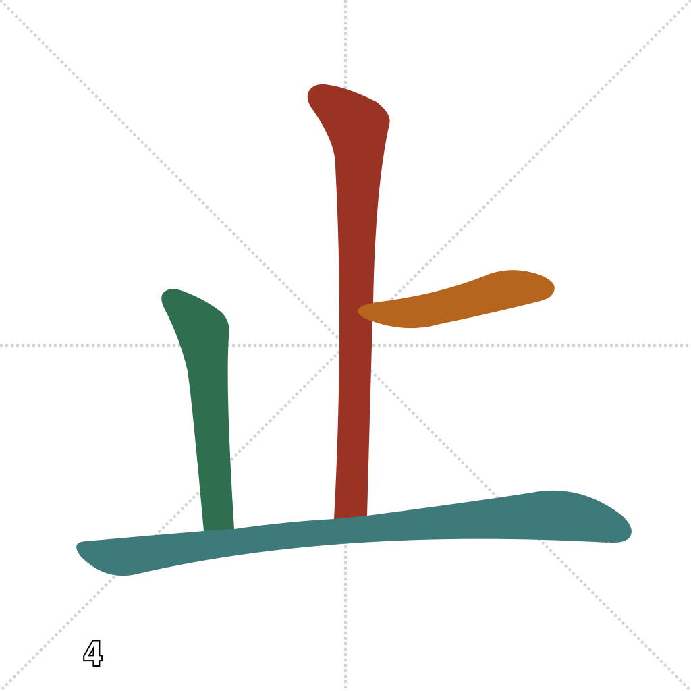
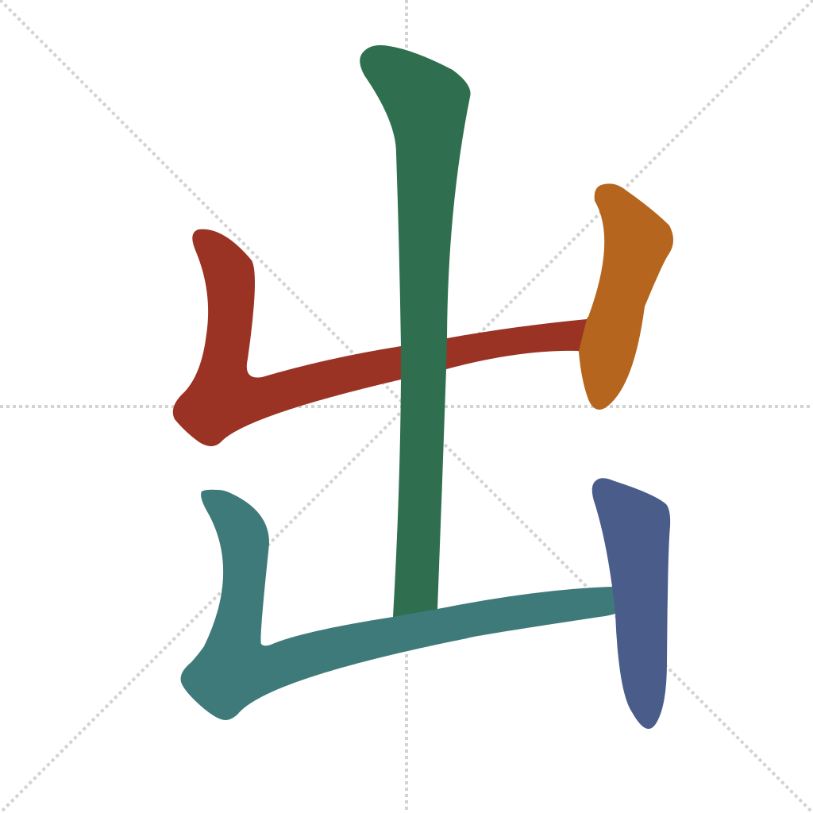

Lesson 4 · Foundational Components
Five components this time, not four — one was added specifically so that the trickiest of the original four, 出, decomposes from something you've actually been taught rather than asserted from nowhere. Unlike 人/木/水/口/日 or 女/子, none of 上/下/出/入 are pictographs of a thing. 上 and 下 are indicative characters (指事 zhǐshì) — a mark placed above or below a baseline, diagramming a relationship rather than drawing an object: there is no smaller piece inside them, so they don't decompose at all. 出 is a compound-meaning character (会意 huìyì) built from 止, below. 入 is a worn-down pictograph whose original picture is lost, but the meaning hasn't: "exit" and "enter" are everywhere you'll need to read.
Quick recall — click each card to flip it:
出 is not "two 山 (mountain) stacked," even though the modern glyph really does look that way — a tempting but wrong decomposition. 山 isn't in this course's component pool yet for exactly that reason: it isn't one of 出's pieces, it just happens to resemble them. The real origin:
chū — out, exit. 止 ("foot," the card above) stepping out of 凵 ("pit, cave"). (Wiktionary: 出)
This pair is the exact trap Outlier Linguistics' Functional Component Framework (Lesson 1) exists to catch: a shape that resembles a known or soon-to-be-known piece isn't necessarily built from it — 出 only decomposes cleanly once you have the real piece, 止, not the visually tempting one, 山.
入 is simple — two strokes, same diagonal shapes as 人, just crossing at a different point (see the callout above):




Think of 出 as two nested ⌐-shapes, each with a vertical post inside, the right section taller than the left:

So far every "combination" you've learned — 休, 林, 好, 如, 太 — has been components fusing into one new character. 出口 and 入口 are a different, even more common pattern: two already-complete characters, placed side by side, forming a two-character word — the same way "sun" + "flower" makes the English word "sunflower" without either word stopping being a word on its own. Most modern Mandarin vocabulary works this way, which is why Hacking Chinese's article on words vs. characters vs. components (cited in RESOURCES.md) is worth keeping in mind: knowing 出 and 口 individually is what lets you read 出口 the instant you see it, with nothing new to memorize.
出 + 口 → 出口 chūkǒu — exit
入 + 口 → 入口 rùkǒu — entrance
口 here is the same "mouth, opening" component from Lesson 1 — an "opening you go out of" and an "opening you go into." 出口/入口 are posted on essentially every door, station platform, and car park in any Mandarin-speaking place you'll visit.
Which component means "enter, into"?
出口 (出 "out" + 口 "opening") marks:
入口 (入 "in" + 口 "opening") marks:
Unlike 好 (女+子), 出口 is best described as:
止 originally depicted:
Primary source for this lesson's central idea: Olle Linge's words vs. characters vs. components article (Hacking Chinese). For etymology, see the Wiktionary entries linked above, or the Outlier Dictionary of Chinese Characters for the rigorous version.
Out in the world: 出口/入口 are the single highest-payoff pair in this lesson — look for them literally anywhere you next pass through a door, train station, or car park.